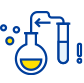
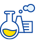

인재상 및 특성화 교육
전주기적 바이오의료
핵심인재양성

우리나라의 미래 핵심산업인 바이오의료 분야의 원천기술 및 의료 신약분야에 이르는 전주기적 교육을 통해 통찰력을 갖춘 인재양성을 목표로 합니다. 이를 위해, 분자의학, 신경과학, 종양생물학, 의약학, 의생명정보, 의료인공지능 등의 전공을 개설하여 다양한 학문분야의 전문성을 함양하고 다학제적 소양을 갖춘 인재양성 프로그램을 운영합니다.
질환중심 연구중심
전문 인력양성
의과대학의 특성을 살려, 병원 인프라와 연계한 질환중심연구 및 중개의학연구를 수행할 수 있는 전문인력을 양성합니다. 의생명과학과애는 기초 및 임상중개의학을 전공하는 다양한 교수진을 확보하고, 지속적인 신임 교원 충원을 통해 신기술 학문분야를 망라하는 교육연구진을 갖추고 있으며, 인체 질병을 극복을 위한 연구프로그램을 운영하고 있습니다. 또한, 연구중심병원, 의과학연구소, 중개오믹스센터 등 핵심 연구 인프라를 구축하고 있어 최상의 연구인프라를 제공합니다
디지털 역량
의생명과학의 대학원생들은 4차산업시대를 맞이하여 디지털 소양을 기르기 위한 필수 교과과정을 운영합니다. 전공에 상관없이 모든 학생은 바이오데이터 활용 능력을 함양하기 위해 의약바이오 데이터분석 및 유전체의학 등 기조과정을 통해 실무 데이터 분석능력을 기르며, 생물정보학, 의료인공지능 등의 심화과정도 제공하여 단계별 수준별 학습을 위한 프로그램을 운영합니다
글로벌 국제화 역량

의생명과학과는 다양한 국적의 국외학생이 재학중이며, 과학영어 커뮤니케이션 등의 교과 운영 및 국제학회 참석 지원 등 대학원생들의 글로벌 국제화 역량을 기르기 위한 다양한 프로그램을 제공합니다